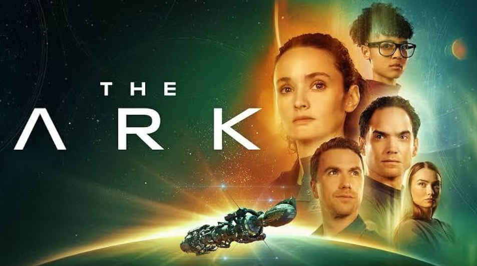

“ Syfy 出品，《星际之门》主创迪安·德夫林打造，目前三季完结（2023‑2026），IMDb评分5.8，媒体评分两极分化，但在硬核太空剧迷圈子里口碑很高。很多人被低分劝退了，实际上是小成本复古太空肥皂生存剧，优点缺点都极其鲜明。”

主流媒体对它的态度很一致。Metacritic 网站上第一季媒体好评率只有 33%，匹兹堡论坛报骂它“剧本糟糕、特效平庸、角色纸片”，每日野兽说它“借用了一堆更好的太空史诗的零件，底下却没什么东西”。IMDb 上也不乏愤怒的观众，吐槽“科学全是胡扯”、“角色蠢得不像精选出来的精英”。
但诡异的是，这部美剧活下来了。不仅活到了第三季，还在 Syfy 整体原创剧集几乎清空的局面下，成了台里仅剩的独苗。而且，有一批观众对它的爱，近乎狂热。
第一季
地球不再宜居，人类派出多艘"方舟"飞船前往新家园。方舟一号在旅途中遭遇灾难性事故，大量船员死亡，幸存的一群人在资源匮乏、内部矛盾的状态下艰难求生。
画面几乎全季都锁在了飞船内部，典型的 “瓶中剧”。一集一个危机：氧气泄露、小行星撞击、水循环故障、人为破坏。一边处理每周生存危机，一边挖出方舟计划背后的黑幕：克隆人、地球高层的阴谋、其它方舟飞船的下落。
第二季
不再局限于单艘飞船，开始太空穿梭，接触别的方舟幸存者。派系冲突加剧，揭开克隆人 “第三代崩溃” 的致命隐患：第三代克隆人会出现生理崩溃，直接威胁女主和大量船员生命。结尾成功抵达目标行星，建立人类殖民地。
第三季
队伍一分为二：一部分留在星球建设殖民地，遭遇外星遗迹、本土未知危险。女主则带领一部分人重返宇宙，寻找其它失散的人类飞船，追查幕后亿万富豪的空间站阴谋。
殖民地内部爆发权力斗争，人类再次分裂：是团结重建文明，还是互相掠夺厮杀。
女主的克隆人身份成为了主线核心冲突，第三季把前面埋下的克隆人、方舟阴谋全部都揭秘了，结局完整还没有烂尾。
说实话，《方舟一号》并不是看一下就想接着看下去的美剧。
特效不算顶级：Syfy的预算摆在那里，和Netflix、HBO的太空剧没法比
节奏偏传统：它不玩非线性叙事，不搞意识流，就是一集一集老老实实地讲故事。
宣发几乎为零：很多人压根不知道它的存在。
但也正因如此，它把精力都花在了最该花的地方：剧本和表演上。
当一部科幻剧不靠视觉奇观来吸引人，而是靠"下一步会发生什么"的悬念来留住你，这本身就是值得一看。